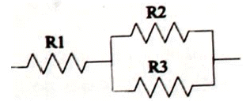
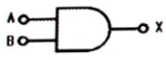
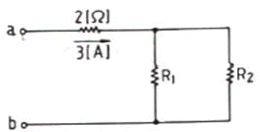
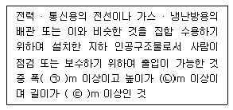
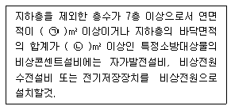

소방설비산업기사(전기) (2016-10-01 기출문제)
1과목: 소방원론
1. 할론 1301 소화약제를 사용하여 소화할 때 연소열에 의하여 생긴 열분해 생성가스가 아닌 것은?
- HF
- HBr
- Br2
- CO2
(정답률: 77%)

2. 산소와 질소의 혼합물인 공기의 평균 분자량은? (단, 공기는 산소 21vol%, 질소 79vol%로 구성되어 있다고 가정한다.)
- 30.84
- 29.84
- 28.84
- 27.84
(정답률: 75%)
3. 질식소화 방법과 가장 거리가 먼 것은?
- 건조 모래로 가연물을 덮는 방법
- 불활성 기체를 가연물에 방출하는 방법
- 가연성 기체의 농도를 높게 아는 방법
- 불연선 포소화약제로 가연물을 덮는 방법
(정답률: 81%)
4. 화재를 발생시키는 열원 중 기계적 원인은?
- 저항열
- 압축열
- 분해열
- 자연발열
(정답률: 84%)
5. 인화점에 대한 설명 중 틀린 것은?
- 인화점은 공기 중에서 액체를 가열하는 경우 액체표면에서 증기가 발생하여 점화원에서 착화하는 최저온도를 말한다.
- 인화점 이하의 온도에서는 성냥불을 접근해도 착화하지 않는다.
- 인화점 이상 가열하면 증기를 발생하여 성냥불이 접근하면 착화한다.
- 인화점은 보통 연소점 이상, 발화점 이하의 온도이다.
(정답률: 79%)
6. 이산화탄소 소화약제가 공기 중에 34vol% 공급되면 산소의 농도는 약 몇vol% 가 되는가?
- 12
- 14
- 16
- 18
(정답률: 70%)
7. 청정소화약제의 물성을 평가하는 항목 중 심장의 역반응(심장 장애현상)이 나타나는 최저농도를 무엇이라 하는가?
- LOAEL
- NOAEL
- ODP
- GWP
(정답률: 69%)
8. 화씨온도 122°F는 섭씨온도는 몇 ℃ 인가?
- 40
- 50
- 60
- 70
(정답률: 82%)
9. 건축법상 건축물의 주요 구조부에 해당 되지 않는 것은?
- 지붕틀
- 내력벽
- 주계단
- 최하층 바닥
(정답률: 82%)
10. 상온, 상압에서 액체 상태인 할로겐화합물 소화약제는?
- 할론 2402
- 할론 1301
- 할론 1211
- 할론 1400
(정답률: 60%)
11. 청정소화약제의 명명법은 Freon-X Y Z B A로 표현하다. 이 중 Y가 의미하는 것은?
- 불소 원자의 수
- 수소 원자의수 - 1
- 탄소 원자의수 - 1
- 수소 원자의수 + 1
(정답률: 58%)
12. 멜라민수지, 모, 실크, 요소수지 등과 같이 질소성분을 함유하고 있는 가연물의 연소 시 발생하는 체로 눈, 코, 인후 등에 매우 자극적이고 역한 냄새가 나는 유독성 연소 가스는?
- 아크로레인
- 시안화수소
- 일산화질소
- 암모니아
(정답률: 78%)
13. 제연방식의 종류가 아닌 것은?
- 자연제연방식
- 기계제연방식
- 흡입제연방식
- 스모크타워 제연방식
(정답률: 64%)
14. 제4류 위험물 중 제1석유류, 제2석유류, 제3석유류, 제4석유류를 각 품명별로 구분하는 분류의 기준은?
- 발화점
- 인화점
- 비증
- 연소범위
(정답률: 83%)
15. 니트로셀룰로오스의 용도, 성상 및 위험성과 저장· 취급에 대한 설명 중 틀린 것은?
- 질화도가 낮을수록 위험성이 크다.
- 운반 시 물, 알코올을 첨가하여 습윤 시킨다.
- 무연화약의 원료로 사용된다.
- 햇빛에서 황갈색으로 변하고 물에 녹지 않지만 아세톤, 초산 에스터, 니트로벤젠에 녹는다.
(정답률: 70%)
16. 분진 폭발의 발생 위험성이 가장 낮은 물질은 ?
- 석탄가루
- 밀가루
- 시멘트
- 금속분류
(정답률: 84%)
17. 100℃의 액체 물 1g을 100℃의 수증기로 만드는 데 필요한 열량은 맥 몇 cal/g 인가?
- 439
- 539
- 639
- 739
(정답률: 76%)
18. 대기 중에 대량의 가연성 가스가 유출하거나 대량의 가연성 액체가 유출하여 그것으로부터 발생하는 증기가 공기와 혼합해서 가연성 혼합기체를 형성하고 발화원에 의하여 발생하는 폭발현상은?
- BLEVE
- SLOP OVER
- UVCE
- FIRE BALL
(정답률: 57%)
19. 건축물 내부 화재 시 연기의 평균 수평 이동속도는 약 몇 m/s 인가?
- 0.5~1
- 2~3
- 3~5
- 10
(정답률: 82%)
20. 화재의 분류 중 B급 화재의 종류로 옳은 것은?
- 금속화재
- 일반화재
- 전기화재
- 유류화재
(정답률: 90%)
2과목: 소방전기회로
21. 원자 하나에 최외각 전자가 4개인 4가의 전자로서 가전자대의 4개의 전자가 안정화를 위해 원자끼리 결합한 구조로 일반적인 반도체 재료로 쓰고 있는 것은?
- si
- P
- As
- Ga
(정답률: 82%)
22. 동작신호의 기울기에 비례한 조작신호를 만드는 것으로 편차발생 초기에 큰 조작신호를 만들어 편차가 커지는 것을 미리 방지하는 제어동작은?(오류 신고가 접수된 문제입니다. 반드시 정답과 해설을 확인하시기 바랍니다.)
- 온·오프동작
- 미분동작
- 적분동작
- 비례동작
(정답률: 45%)
23. 10kVA의 변압기 2대로 최대 공급할 수 있는 3상 전력은 약 몇 kVA인가?
- 14.1
- 17.3
- 20
- 30
(정답률: 74%)
24. 어느 직류전원에 전류를 흘릴 때 전원 전압을 6배로 하여 흐르는 전류가 2.5배가 되도록 하려면 저항값 은 몇 배로 해야 하는가?
- 0.4
- 2.4
- 3.9
- 15.0
(정답률: 72%)
25. 부하의 역률을 개선하기 위하여 설치하는 콘덴서의 위치로 가장 효과적인 방법은?
- 부하와 직렬로 설치한다.
- 부하와 병렬로 설치한다.
- 수전점 에 설치한다.
- 부하와 대지 간에 설치한다.
(정답률: 75%)
26. 회로에서 R1, R2, R3가 각각 3Ω,2Ω,3Ω 일 때 합성 저항값 은 몇Ω인가?

- 1.8
- 3.3
- 4.2
- 8
(정답률: 74%)
27. 조종하는 사람이 없는 엘리베이터의 자동제어가 해당하는 것은?
- 프로그램 제어
- 추종 제어
- 비율 제어
- 정치 제어
(정답률: 82%)
28. 프로그램제어에서 스캔타임의 계산식은?
- 스탭 수×처리속도
- 스탭 수÷처리속도
- 스탭 수+처리속도
- 스탭 수-처리속도
(정답률: 75%)
29. 그림과 같은 논리회로의 명칭은?

- AND
- OR
- NOT
- NAND
(정답률: 80%)
30. 무인 커피 판매기는 무슨 제어방식 인가?
- 프로세스 제어
- 서보 제어
- 자동 조정
- 시퀀스 제어
(정답률: 78%)
31. 발전기 권선의 중간 단락보호에 가장 적합한 계전기는?
- 과부하계전기
- 접지계전기
- 차동계전기
- 온도계전기
(정답률: 51%)
32. 변압기 결선 시 제3고조파가 발생하는 것은?
- △-△
- △-Y
- Y-△
- Y-Y
(정답률: 73%)
33. 저항 10Ω, 유도 리액턴스 8Ω, 용량 리액턴스 20Ω이 병렬로 접속된 회로에 80V의 교류 전압을 가할 때 흐르는 전류는 몇A 인가?
- 20
- 15
- 10
- 5
(정답률: 48%)
34. 부저항 특성을 갖는 서미스터의 저항 값 은 온도가 증가함에 따라 어떻게 변하는가?
- 감소
- 증가
- 증가하다가 감소
- 감소하다가 증가
(정답률: 77%)
35. 변류기의 2차 전류 는 일반적으로 몇A인가?
- 2
- 3
- 5
- 8
(정답률: 73%)
36. 그림과 같은 회로에 있어 ab단자에 24V의 전압을 인가하면 3A의 전류가 흐른다. 이 때 R1, R2에 흐르는 전류를 2대3의 비로 하려면 R1, R2의 저항 값 은 각 각 몇Ω인가?

- R1=10, R2=15
- R1=15, R2=10
- R1=8, R2=12
- R1=12, R2=18
(정답률: 60%)
37. 피드백 제어계 에서 제어요소는 동작신호를 무엇으로 변환하는 요소인가?
- 조작량
- 제어량
- 비교량
- 검출량
(정답률: 67%)
38. 바리스터의 주된 용도로 가장 옳은 것은?
- 온도보상
- 출력전류 조절
- 전압증폭
- 서지전압에 대한 회로보호
(정답률: 79%)
39. 회로시험기(Tester)로 직접 측정할 수 없는 것은?
- 직류전류
- 역률
- 교류전압
- 저항
(정답률: 77%)
40. 220V, 60W 가정용 전구의 평균값은 약 몇 V인가?
- 110
- 141
- 173
- 198
(정답률: 42%)
3과목: 소방관계법규
41. 소방시설의 하자 발생 통보를 받은 공사업자는 며칠 이내에 하자를 보수하거나 보수 일정을 기록한 하자보수계획을 관계인에게 서면으로 알려야 하는가?
- 1일
- 2일
- 3일
- 7일
(정답률: 66%)
42. 제연설비를 설치해야 하는 특정소방대 상물의 기준으로 틀린 것은?
- 운동시설로서 무대부의 바닥면적인 200m2이상인 것
- 지하가(터널은 제외한다)로서 연면적 1000m2이상인 것
- 휴게시설로서 지하층의 바닥면적인 500m2이상인 것
- 문화 및 집회시설 중 영화상영관으로서 수용인원이 100명 이상인 것
(정답률: 41%)
43. 국민안전처장관, 소방본부장 또는 소방서장은 소방특별조사를 하려면 관계인에게 조사대상, 조사기간 및 조사사유 등을 서면으로 며칠 전에 알려야 하는가?(단, 긴급하게 조사할 필요가 있는 경우와 사전에 통지하면 조사목적을 달성할 수 없다고 인정되는 경우는 제외한다.)
- 3
- 7
- 10
- 14
(정답률: 68%)
44. 특정소방대상물 중 지하구 에 대한 기준으로 다음 ( )안에 들어갈 내용으로 알맞은 것은?

- ㉠1.8, ㉡2.0, ㉢50
- ㉠2.0, ㉡2.0, ㉢500
- ㉠2.5, ㉡3.0, ㉢600
- ㉠3.0, ㉡5.0, ㉢700
(정답률: 56%)
45. 휴대용 비상조명등을 설치해야 하는 특정소방 대상물이 아닌 것은?
- 숙박시설
- 지하가 중 지하상가
- 판매시설 중 대규모점포
- 수용인원 100인 이상의 도서관
(정답률: 59%)
46. 옥외저장탱크의 주위에 그 저장 또는 취급하는 위험물의 최대수량이 지정수량의 1000배 초과 2000배 이하인 경우 옥외저장탱크의 측면으로부터 보유해야 하는 공지의 최소 너비는 몇 m 이상이어야 하는가? (단, 위험물을 이송하기 위한 배관 그 밖에 이에 준하는 공작물은 제외한다.)
- 9
- 7
- 5
- 3
(정답률: 42%)
47. 소방시설관리업의 등록을 하지 않고 영업을 한자에 대한 벌칙기준은?(관련 규정 개정전 문제로 여기서는 기존 정답인 3번을 누르면 정답 처리됩니다. 자세한 내용은 해설을 참고하세요.)
- 300만원 이하의 벌금
- 1년 이하의 징역 또는 1000만원 이하의 벌금
- 3년 이하의 징역 또는 1500만원 이하의 벌금
- 5년 이하의 징역 또는 3000만원 이하의 벌금
(정답률: 71%)
48. 방염성능기준 이상의 실내장식물 등을 설치하여아 하는 특정소방대상물에 해당 되지 않는 것은?
- 근린생활시설 중 체력단련장
- 의료시설 중 종합병원
- 숙박이 가능한 수련시설
- 층수가16층 이상인 아파트
(정답률: 75%)
49. 특정소방대상물에 소방시설을 설치하는 경우 국민안전처장관이 정하는 내진설계 기준에 맞게 설치해야 하는 설비가 아닌 것은?
- 옥내소화전설비
- 연결살수설비
- 스프링클러설비
- 물분무등소화설비
(정답률: 62%)
50. 소방시설 중 소화활동설비에 해당하지 않는 것은?
- 제연설비
- 연소방지설비
- 비상경보설비
- 무선통신보조설비
(정답률: 60%)
51. 위험물 제조소에 환기설비를 설치할 경우 바닥면적 이 100m2이면 급기구의 면적은 몇 cm2이상이어야 하는가?
- 150
- 300
- 450
- 600
(정답률: 53%)
52. 다음에 해당하는 자에 대한 벌칙기준으로 벌금이 가장 큰 경우는?(관련 규정 개정전 문제로 여기서는 기존 정답인 2번을 누르면 정답 처리됩니다. 자세한 내용은 해설을 참고하세요.)
- 소방안전관리자 를 선임하지 아니한 자
- 변경허가를 받지 아니하고 제조소등을 변경한 자
- 위험물의 운반에 관한 중요기준을 따르지 아니한 자
- 방염성능검사에 합격하지 아니한 물품에 합격표시를 위조하거나 변조하여 사용한 자
(정답률: 61%)
53. 특수가연물의 품명과 수량기준이 옳게 연결된 것은?
- 면화류 - 200kg 이상
- 대팻밥 - 300kg이상
- 가연성 고체류 - 1000kg 이상
- 합성수지류(발포시킨 것) - 10m3 이상
(정답률: 74%)
54. 특수가연물의 저장 및 취급 기준은 무엇으로 정하는가?
- 대통령령
- 총리령
- 시 · 도의 조례
- 국민안전처장관령
(정답률: 62%)
55. 소방본부장이나 소방서장이 소방시설공사 완공검사를 위한 현장확인 대상 특정소방 대상물의 범위에 해당하지 않는 것은?
- 운동시설
- 노유자시설
- 판매시설
- 업무시설
(정답률: 61%)
56. 운송책임자의 감독 · 지원을 받아 운송해야 하는 위험물은?
- 알카리토금속
- 칼륨
- 유기과산화물
- 알칼리륨
(정답률: 53%)
57. 소방기본법상 소방대상물에 해당되지 않는 것은?
- 건축물
- 항해 중인 선박
- 차량
- 산림
(정답률: 86%)
58. 다음 중 소방활동 종사 명령권을 가진 사람은 누구인가?
- 국민안전처장관
- 소방대장
- 시·도지사
- 관계인
(정답률: 77%)
59. 정당한 사유 없이 소방대가 현장에 도착할 때까지 사람을 구출하는 조치 또는 불을 끄거나 불이 번지지 아니하도록 하는 조치를 하지 아니한 사람에 대한 벌칙은?
- 1년 이하의 징역
- 100만원 이하의 벌금
- 500만원 이하의 벌금
- 1000만원 이하의 벌금
(정답률: 74%)
60. 지정수량의 몇 배 이상의 위험물을 취급하는 제조소에는 피뢰침을 설치해야 하는가? (단, 제6류 위험물을 취급하는 위험물 제조소는 제외한다.)
- 5배
- 10배
- 50배
- 100배
(정답률: 66%)
4과목: 소방전기시설의 구조 및 원리
61. 무선통신보조설비에서 두 개 이상의 입력신호를 원하는 비율로 조합한 출력이 발생하도록 하는 장치는?
- 분배기
- 분파기
- 혼합기
- 증폭기
(정답률: 74%)
62. 비상방송설비 음향자치의 설치기준으로 틀린 것은?
- 실내에 설치하는 확성기의 음성입력은 1W이상일 것
- 확성기는 각 층마다 설치하되 그 층의 각 부분으로부터 하나의 확성기까지의 수평거리가 15m 이하가 되도록 할 것
- 음량조절기를 설치하는 경우 음량조정기의 배선은 3선식으로 할 것
- 화재발생 상황 및 피난에 유효한 방송이 자동으로 개시될 때까지의 소요시간은 10초 이하로 할 것
(정답률: 74%)
63. 자동화재 탐지설비 음향자치는 정격전압의 몇 %에서 음향을 발할 수 있어야 하는가?
- 50
- 60
- 70
- 80
(정답률: 85%)
64. 청각장애인용 시각정보장치의 설치기준으로 틀린 것은?
- 복도·통로·청각장애인용 객실 및 공용으로 사용하는 거실에 설치하며, 각 부분으로부터 유효하게 경보를 발할 수 있는 위치에 설치하여야 한다.
- 공연장·집회장·관람장 또는 이와 유사한 장소에 설치하는 경우에는 시선이 집중되는 무대부 부분 등에 설치하여야 한다.
- 설치높이는 바닥으로부터 1m 이상 1.5m이하의 장소에 설치하여야 한다.
- 천장의 높이가 2m 이하인 경우에는 천장으로부터 0.15m 이내의 장소에 설치하여야 한다.
(정답률: 75%)
65. 누정경보기 수신부의 기능검사 항목이 아닌 것은?
- 방폭시험
- 방수시험
- 충격시험
- 절연내력시험
(정답률: 58%)
66. 지하층으로서 지표면으로부터 깊이가 몇m 이하인 경우 해당층 에 한하여 무선통신 보조설비를 설치하지 않아도 되는가?
- 1
- 2
- 3
- 4
(정답률: 68%)
67. 축광방식 피난유도선의 설치기준으로 틀린 것은?
- 부착대 에 의하여 견고하게 설치할 것
- 구획된 각 실로부터 주줄입구 또는 비상구까지 설치할 것
- 피난유도 표시부 는 50cm 이내의 간격으로 연속되도록 설치할 것
- 바닥으로부터 높이 70m 이하의 위치 또는 바닥 면에 설치할 것
(정답률: 64%)
68. 광전식 분리형 감지기의 설치기준 중 광죽의 높이는 천장 등 높이의 몇 %이상이어야 하는가?(단, 천장 등이란 천장의 실내에 면한 부분 또는 상층의 바닥하부 면을 말한다.)
- 60
- 80
- 120
- 140
(정답률: 76%)
69. 누전경보기의 전원은 분전반으로부터 전용회로로 하고, 각 극에 개폐기와 몇A이하의 과전류차단기를 설치해야 하는가?
- 10
- 15
- 20
- 30
(정답률: 79%)
70. 비상콘센트설비의 비상전원 중 자가발전설비는 비상콘센트설비를 몇 분 이상 유효하게 작동시킬 수 있는 용량으로 설치해야 하는가?
- 10
- 20
- 30
- 60
(정답률: 61%)
71. 누전경보기용 변압기의 정격 1차 전압은 몇 V이하로 해야 하는가?
- 50
- 100
- 200
- 300
(정답률: 47%)
72. 객석의 통로 직선부분 길이가 32m인 경우 객석유도등은 최소 몇 개 이상 설치해야 하는가?
- 5
- 6
- 7
- 8
(정답률: 58%)
73. 무선통신보조설비에서 신호의 전송로가 분기되는 장소에 설치하는 것으로 임피던스 매칭과 신호균등분배를 위해 사용하는 장치는?
- 분파기
- 혼합기
- 증폭기
- 분배기
(정답률: 82%)
74. 비상 콘센트설비 비상전원의 설치기준 중 다음 ( )안에 알맞은 것은?

- ㉠ 2000 ㉡ 3000
- ㉠ 3000 ㉡ 2000
- ㉠ 4000 ㉡ 3000
- ㉠ 3000 ㉡ 4000
(정답률: 71%)
75. 무선통신보조설비에 사용되는 증폭기의 비상전원 용량은 무선통신보조설비를 유효하게 몇 분 이상 작동시킬 수 있는 것이어야 하는가?
- 10
- 20
- 30
- 60
(정답률: 64%)
76. 이산화탄소 소화설비의 수동식 기동장치 조작부의 설치높이 기준으로 옳은 것은?
- 바닥으로부터 0.8m 이상 1.5m 이하
- 바닥으로부터 1.5m 이하
- 바닥으로부터 1.0m 이하 1.5m 이하
- 바닥으로부터 1.0m 이하
(정답률: 82%)
77. 누전경보기 전압 지시전기계의 최대눈금의 범위로 옳은 것은?
- 사용하는 회로의 정격전압의 75%이상 ~ 100%이하
- 사용하는 회로의 정격전압의 80%이상 ~ 120%이하
- 사용하는 회로의 정격전압의 90%이상 ~ 110% 이하
- 사용하는 회로의 정격전압의 140%이상 ~ 200% 이하
(정답률: 61%)
78. 예비전원을 내장하지 않는 비상조명등의 비상전원 설치기준으로 옳은 것은?
- 비상전원은 실내에 설치하지 않을 것
- 비상전원은 자가발전설비 또는 축전지설비를 설치할 것
- 평상시 점등여부를 확인할 수 있는 점검스위치를 설치할 것
- 상용전원으로 전력공급이 중단된 때에는 수동으로 비상전원으로부터 전력을 공급받을 수 있도록 할 것
(정답률: 51%)
79. 지하철역사에 설치해야 할 피난구유도등의 종류는?(단, 소방서장의 특정소방대상물의 위치· 구조 및 설비의 상황을 판단한 견해는 배제한다.)
- 소형
- 중형
- 대형
- 특형
(정답률: 69%)
80. 정온식 감지선형 감지기의 설치기준으로 틀린 것은?
- 감지선형 감지기의 굴곡반경은 5㎝ 이상으로 할 것
- 보조선이나 고정금구를 사용하여 감지선이 늘어지지 않도록 설치할 것
- 단자부와 마감 고정금구와의 설치간격은 15㎝ 이내로 설치할 것
- 감지기와 감지구역의 각 부분과 수평 거리가 내화구조의 경우 1종 4.5m 이하, 2종 3m 이하로 할 것
(정답률: 58%)